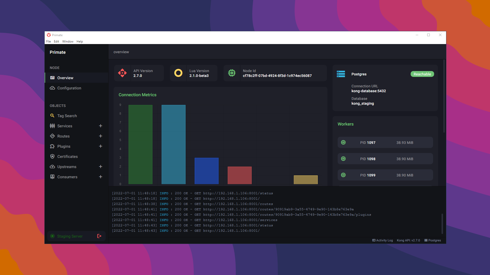
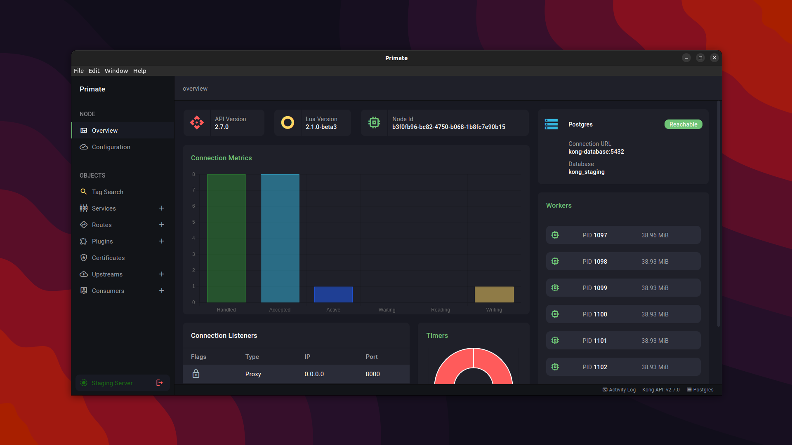
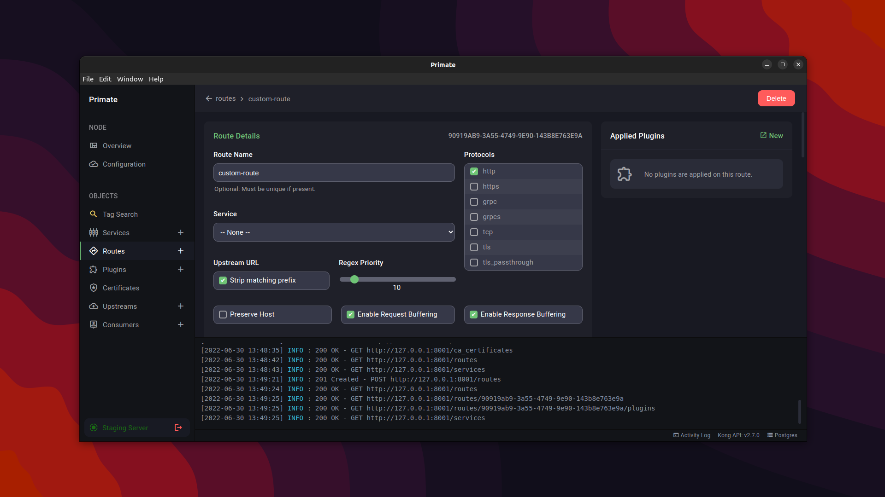
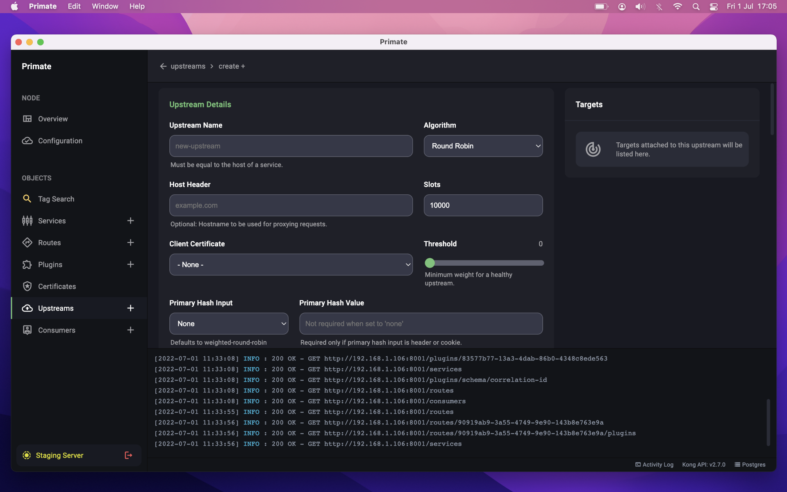

<section class="overview-info">
<div class="container">

<h1 class="display-5 text-center py-3">Resources</h1>

<h3 class="text-muted py-4 mb-4 border-bottom">Screenshots</h3>
<div class="row text-center">
    <div class="col col-12">
        <div id="platformCarousel" class="carousel slide border border-1 rounded-3 p-3" data-bs-ride="carousel">
            <div class="carousel-indicators">
              <button type="button" data-bs-target="#platformCarousel" data-bs-slide-to="0" class="active" aria-current="true" aria-label="Windows"></button>
              <button type="button" data-bs-target="#platformCarousel" data-bs-slide-to="1" aria-label="Linux 1"></button>
              <button type="button" data-bs-target="#platformCarousel" data-bs-slide-to="2" aria-label="Linux 2"></button>
            </div>
            <div class="carousel-inner">
              <div class="carousel-item active">
                
              </div>
              <div class="carousel-item">
                
              </div>
              <div class="carousel-item">
                
              </div>
            </div>
            <button class="carousel-control-prev" type="button" data-bs-target="#platformCarousel" data-bs-slide="prev">
              <span class="carousel-control-prev-icon" aria-hidden="true"></span>
              <span class="visually-hidden">Previous</span>`
            </button>
            <button class="carousel-control-next" type="button" data-bs-target="#platformCarousel" data-bs-slide="next">
              <span class="carousel-control-next-icon" aria-hidden="true"></span>
              <span class="visually-hidden">Next</span>
            </button>
          </div>
    </div><!-- .col -->
</div><!-- .row -->
<div class="spacer py-2">&nbsp;</div>

<div class="row">
    <div class="col col-12">
        <p class="border border-1 rounded-3 p-3"></p>
    </div>
</div>

<div class="spacer py-4">&nbsp;</div>
<h3 class="text-muted py-4 mb-4 border-bottom">Icons</h3>

<div class="d-flex flex-row  justify-content-center align-items-end text-center">
    <div class="px-3">
        <p></p>
        <p>128x128</p>
    </div>
    <div class="px-3">
        <p></p>
        <p>256x256</p>
    </div>
    <div class="px-3">
        <p></p>
        <p>512x512</p>
    </div>
</div><!-- .d-flex-->

<div class="spacer py-4">&nbsp;</div>

<div class="d-flex flex-row  justify-content-center align-items-end text-center">
    <div class="px-3">
        <p class="border border-1 rounded rounded-3"></p>
        <p>128x128</p>
    </div>
    <div class="px-3">
        <p class="border border-1 rounded rounded-3"></p>
        <p>256x256</p>
    </div>
    <div class="px-3">
        <p class="border border-1 rounded rounded-3"></p>
        <p>512x512</p>
    </div>
</div><!-- .d-flex-->

</div><!-- .container -->
</section><!-- .overview-info -->
